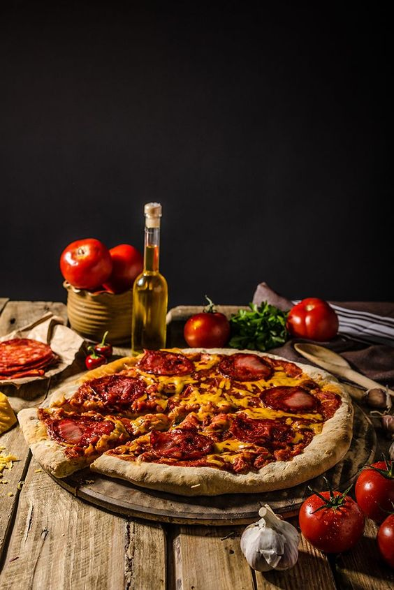

Odin's Special Pizza

Description
Pizza molded and created by the gods themselves, Odin's pizza is renowned althroughout Olympus.
It is said that Odin's pizza contains multiple high-quality ingredients, from the blood of giants to
the flesh of unicorns. Hades has described the taste of the pizza as "Oddly enamoring". Poseidon, who
hates pizza, has vouched for the quality of Odin's pizza throughout multiple centuries.
Ingredients:
- ¼ cup warm water
- 1 teaspoon active dry yeast
- 1 cup cold water
- 1 teaspoon salt
- 3 cups bread flour
- 1 tablespoon extra-virgin olive oil
- 6 ounces low moisture mozzarella cheese, thinly sliced
- ¼ teaspoon freshly ground black pepper
- ½ cup no salt added canned crushed tomatoes
- tablespoons extra-virgin olive oil
- 6 leaves fresh basil, torn
Steps:
- Make the dough: Pour warm water into a large bowl, then sprinkle yeast over the top. Let stand for
5 minutes. Stir in cold water and salt. Stir in flour, 1 cup at a time until incorporated.
- Knead dough on a floured surface until smooth, about 10 minutes.
- Divide in half and form into two tight dough balls. Coat with olive oil and refrigerate in a sealed
container for at least 16 hours. Be sure to use a big enough container to allow dough to rise.
- Make the pizzas: Remove dough from the refrigerator one hour prior to using.
- Preheat the oven, with a pizza stone on the lowest rack, to 550 degrees F (288 degrees C). Lightly
dust a pizza peel with flour.
- Prepare the first pizza: Lightly dust one dough ball with flour and stretch gradually until about
14 inches in diameter, or about the size of the pizza stone. Place on the floured peel.
- Lay 1/2 of the mozzarella on the crust, then sprinkle 1/4 teaspoon oregano and 1/8 teaspoon pepper
over the top. Randomly arrange 1/4 cup crushed tomatoes over the pizza, leaving some empty areas, then
drizzle 1 tablespoon olive oil over top.
- With a quick back and forth jerk, make sure dough will release from the peel easily. Place the tip of
the peel at the back of the preheated pizza stone, and remove the peel so that the pizza is left on the stone.
- Bake in the preheated oven until the crust begins to brown, 4 to 6 minutes.
- Slide the pizza onto the peel and remove from the oven; then slide off the peel onto a work surface.
Sprinkle 1/2 of the basil leaves randomly over the pizza. Cut into wedges and serve.
- Follow Steps 5 through 9 to make the second pizza.